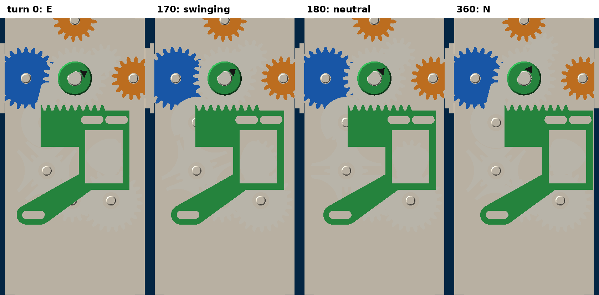
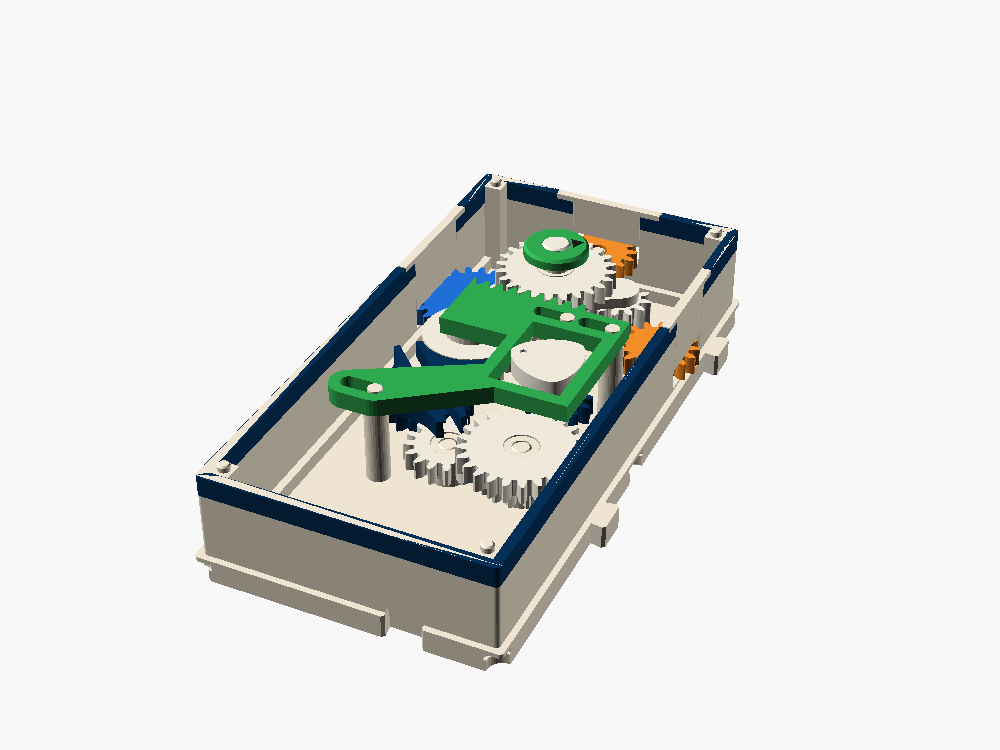
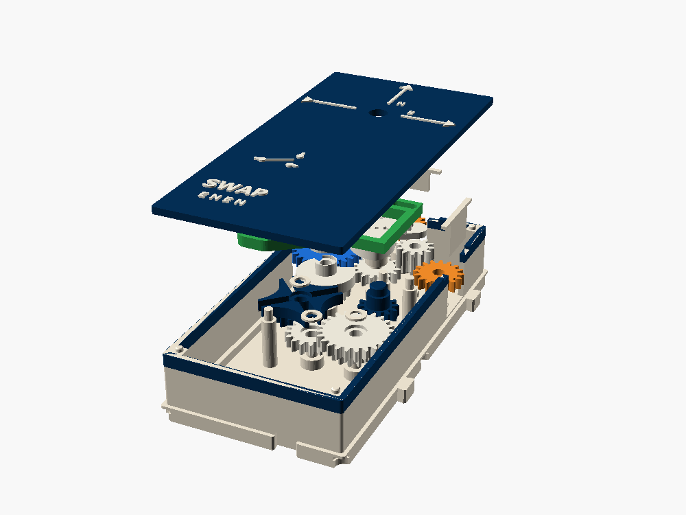

SWAP
Turn the line once and it comes out of E. Turn it again and it comes out of N. Then E, then N. It is a toggle, a T flip-flop built from gears, in one box.

What it does
state = not state on every turn of the input, and out = state ? N : E. It divides by two which side is live. Feed one output into a counter and the other into a bell, and you have a machine that takes turns.
All three ports sit on the north cell, so SWAP drops into a layout exactly where a STEER would, with its tail pointing south.
| Port | Side | Lane | Teeth | Layer | Role |
|---|---|---|---|---|---|
| W | W, north cell | B | 24 | 1 | data in, and the clock that flips it |
| E | E, north cell | B | 16 | 1 | out on even turns |
| N | N | B | 16 | 2 | out on odd turns |
How it works

Data, north cell
W (24) → A (16) → the idler (12) on the tumbler arm → E or N (16). Three meshes, so forward and x1, the same as STEER.
Toggle, south cell
- W (24) drives D (16). D turns once for every turn of the line.
- D carries GENEVA's pin and locking disc. Each turn, the pin steps the four-slot wheel G a quarter turn; the disc locks G for the other three quarters.
- G → H → J (16 then 24) → Y (12). Y turns twice as far as G: half a turn per step.
- Y carries a cam that runs in a slot across a slider. Half a turn of the cam throws the slider 5.86 mm east or west.
- The slider's rack turns the arm's 24-tooth gear the 28° from the E rest to the N rest, or back.
Edge-triggered. The flip happens while the line goes from 135° to 225° past each whole turn. For the other 270°, nothing in the toggle moves. Between flips the Geneva disc locks G and the cam sits at a dead center, so the tumbler's tooth drag can't push the arm over. No latch, no rubber band.
Why the cam isn't a plain eccentric
The idler leaves a port at one flip and comes back to it two flips later. Meanwhile that port stands still. The idler only drops cleanly into its tooth gaps if the line turned a whole number of teeth (16 per turn) between losing touch and touching again.
| Cam | Line turn, leave to touch | Teeth | Landing |
|---|---|---|---|
| Plain eccentric | 369.2° | 16.41 | 0.41 tooth off: nearly tip on tip |
| Constant-breadth, third harmonic | 381° | 16.93 | 0.07 tooth (1.5°) off: in the gaps |
The cam is a rounded triangle, 15 mm across in every direction, so it fills the slot both ways at once like an eccentric does. Its profile is -(e − b) cos t − b cos 3t with e = 2.93 and b = 0.733, just under e/4 so it stays convex. You can see the arm pause at neutral on the dial.
Inside


Torque cost
3 stages on the data line, like STEER. The toggle hangs off the same W gear (D, the Geneva step, H, J, Y and the slider) and adds about 5, mostly during the quarter turn of the flip. Plan on 8 from the drive, so put SWAP right after a crank or a tap.
Parts
- Shell (bone, Switches & clocks band), three keepers, caps on D, G, H, J.
- Lid in Switches & clocks dark blue, white raised lettering.
- Port W. Ports E and N.
- Inner stacks A, D, G, H, J, Y; D's Geneva arm; the tumbler (STEER's sleeve, arm, idler, idler pin); the cam.
- The slider and the dial: together they display the state.
- Bought: nothing.
Drop-in order: ports and keepers; A, the sleeve, the idler on its pin in the arm, the arm on A's pin; H, then D, then G (G's wheel passes over H), J, Y; the caps; D's arm on D's flat; the cam on Y's key; the slider down over the three posts with the cam in its slot and the rack meshing the arm's gear; the lid; the dial.
Checked
- Every moving part against every other (exported and intersected): clean at line turn 0, 140, 155, 205, 220, 360, 520, 560 and 720. Mid-flip, only a 0.01 mm³ sliver between D and G at z 10.4, the same
gbs_epsoverlap GENEVA has. - Fixed parts against each other: clean.
- The rack meshes the arm's gear and the cam fills its slot at E, neutral and N (moving the slider 0.6 mm or 0.4 mm either way makes them collide).
- Idler landing: −1.5° on both ports.
Verify when printed
- The Geneva pin driving H, J, Y, the cam and the tumbler at once: more load than GENEVA's dial.
- The idler landing in the waiting port's gaps, and the port getting dragged a little as the idler leaves.
- The slider on its three posts: drag, and tipping on the long tongue to the south-west post.
- The cam's D-key (1.4 mm wall on its thin side), and D's arm staying down on its flat.